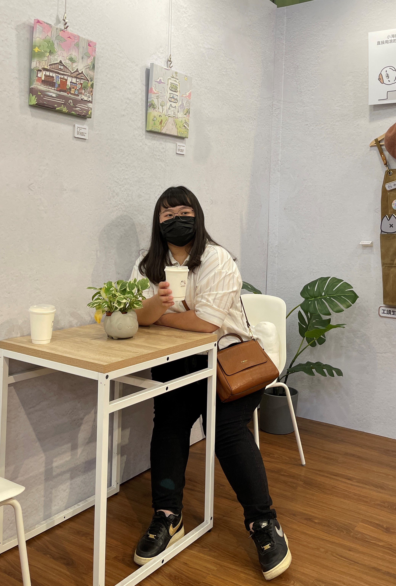

基本資料
姓名：江佩蓉
就讀學校：輔仁大學資訊工程學系


嗨~我是Pei，這個簡單網頁的主人
很多頁要趕工真的很累இ௰இ
尤其現在是個繁忙的季節
專題、上課、工作、實習準備、碩班推甄
真的有各式各樣的事情可以讓自己焦頭爛額....
好，反正就是個打廢話的地方~
繼續看下去吧o(*￣▽￣*)o
能力與實作經驗：
| 程式語言 | 實作過的內容 |
|---|---|
| C/C++ | 程式解題、Arduino開發版實作 |
| Java | 程式解題 |
| Python | 深度學習演算法之基本訓練、簡易小遊戲開發 |
| C# | 利用VS實作Windows視窗程式與網頁設計、Unity遊戲開發 |
| Python | 深度學習演算法之基本訓練、簡易小遊戲開發 |
| HTML、CSS | 前端網頁實作 |
| JavaScript | 前端網頁之互動操作(JQuery)、簡易小遊戲開發 |
經歷：
| 簡述 | 時間 |
|---|---|
| 輔仁大學急救指導員 | 107年至今 |
| 橘子蘋果程式講師 | 109年7月至今 |
| 輔仁大學資工系工讀生 | 109年7月至今 |
| 輔仁大學AI2課程助教 | 110學年度至今 |